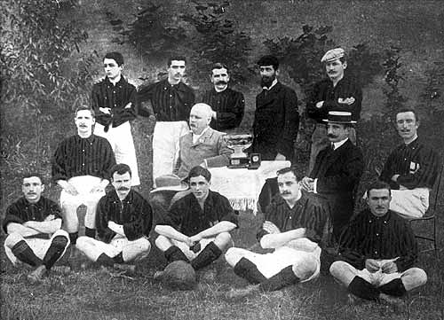

Historia y Leyenda
En vísperas del inicio del siglo XX los ingleses Alfred Edwards y Herbert Kilpin, junto con un grupo de amigos y tras llegar a un acuerdo con unos empresarios, fundaron el 16 de diciembre de 1899 el Milan Cricket and Football Club, que fue dado a conocer el viernes 15 del mismo mes en un artículo del diario La Gazzetta dello Sport.[17] Las primeras oficinas de las cuales dispuso el club estaban ubicadas en la Fiaschetteria Toscana de la Vía Berchet en Milán. Edwards, bastante conocido en la alta sociedad de Milán, fue el primer presidente electo del club. Los colores que siempre lo han distinguido son el rojo y el negro, y fueron escogidos en dicha reunión constitutiva para infundir respeto a sus rivales en alusión al diablo,[18] alusión por la que suelen ser referidos. Compite en la máxima categoría de la Lega Nazionale Professionisti Serie A del fútbol italiano, la homónima Serie A, desde su instauración en 1929 con la excepción de dos períodos en los que descendió: la primera en la temporada 1979-80 y la segunda en la 1981-82 para un total de 84 temporadas,[14] siendo el cuarto equipo italiano con más presencias.[15] A ellas se suman otras 26 de ediciones anteriores para 110 temporadas en primera categoría, siendo el segundo club con más participaciones.[n. 2] El debut en la máxima categoría en el período previo a la ronda única se remonta a 1900. En ella ha obtenido 19 títulos de campeón o scudetti, como tercer club más laureado.[n. 3] Completa sus registros nacionales con cinco títulos de la Coppa Italia y ocho de la Supercoppa lo que lo coloca segundo en el palmarés histórico del país, donde se encuentra adscrito a la Federación Italiana de Fútbol (FIGC) (en italiano: Federazione Italiana Giuoco Calcio). Fue el primer equipo italiano en haber ganado la Copa de Europa (en 1962-63) y el segundo europeo y primer italiano en cuanto a número de finales de Copa de Europa/Liga de Campeones de la UEFA jugadas con 11 (empatado con el Bayern de Múnich), en el ámbito internacional es el equipo italiano y tercer conjunto europeo con mayor número de trofeos internacionales oficiales al lograr 20 títulos, por detrás de Real Madrid (34) y F. C. Barcelona (22). De ellos, siete son de la Copa de Europa / Liga de Campeones de la UEFA (la máxima competición de clubes de fútbol de Europa), siendo el segundo en cantidad de trofeos, detrás del Real Madrid (15); dos de la extinta Recopa de Europa, cinco de la Supercopa de Europa y dos de la extinta Copa Europea Latina además de otros cuatro títulos intercontinentales o mundiales; tres de la Copa Intercontinental, y uno de su sucesora; la Copa Mundial de Clubes.[n. 4
